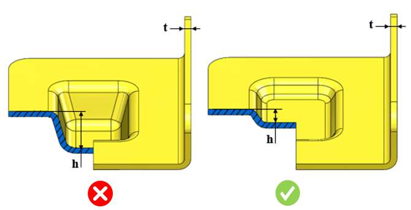

エンボスの深さは、指定された値未満である必要があります。
エンボスは、プレス加工部品の表面に形成される小さく浅い突起形状です。この加工では、主な変形モードは引き伸ばしであり、高い引張応力が発生します。その結果、材料は過度な肉薄化や破断を受ける可能性があります。
そのため、エンボス形状の深さは、材料の延性（伸び性）、エンボス形状の肉厚、および摩擦係数によって制限されます。
各材料に対するエンボスの最大深さは、設定された値に従う必要があります。
材料およびその特性に基づき、エンボス深さと板厚の比率について異なる値を推奨します。
エンボス深さと板厚の比率の値を、適切に設定してください。
ユーザーは、材料データベース（Materials Database） に登録されている製造材料を使用して、表示される一覧から特定の材料に基づいて比率を選択することもできます。
選択した材料に対してエンボス深さと板厚の比率が設定されていない場合、デフォルト値が部品解析に使用されます。

ここでは、
t = 板金厚さ
h = エンボス深さ